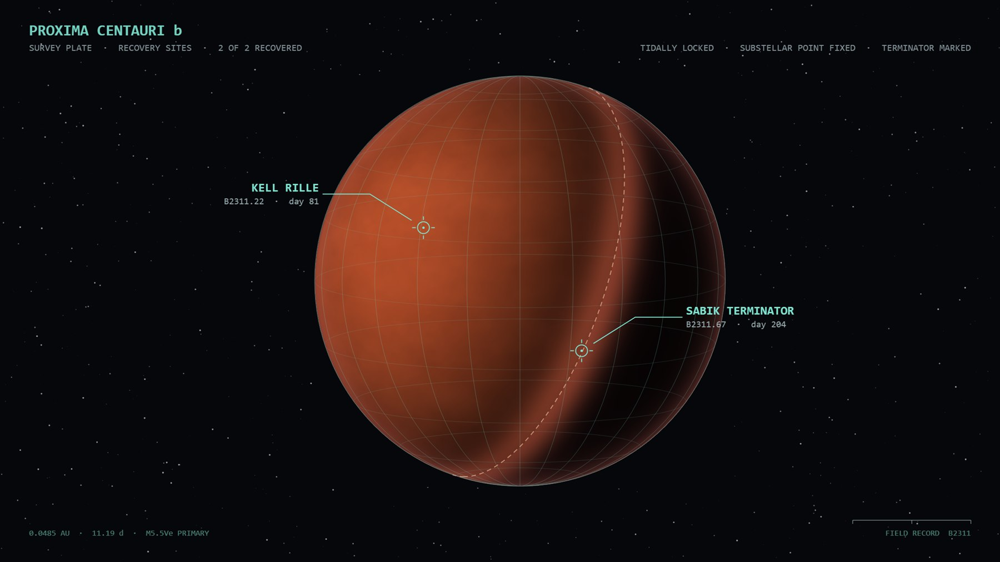

Four objects were recovered. All produce sound continuously, by means
that have no counterpart among our instruments, and none has been persuaded to
stop.

Drag to turn the world. It is tidally locked: the star stands over one
fixed place on the ground and never moves, so the lit face is a region of the planet
rather than a trick of the view. Turn it and the day side travels with the terrain —
the far side is genuinely dark. Kell Rille lies inside the lit hemisphere; the Sabik
vault field sits on the boundary itself, and passes into night as you go round.
The collectionWhat was brought back
None of the four was made by us. All are bodies of four spatial dimensions,
of which we meet only a three-dimensional section — move the section and a different part
of the object is simply present, entering and leaving at the boundary without damage.
None has controls. There are no markings, no surfaces that invite a hand, nothing
that moves when pushed. Every named quantity on the frames around them was chosen by us,
for our convenience, and describes what our apparatus does rather than any faculty the
objects possess.
B2311.1
Kell Rille, scree
Surface collection · day 6 · logged as a nodule · catalogued last
It counts. Every part of it holds a count that rises at its own rate, and on reaching
the top it discharges and shoves the counts beside it forward — so a discharge can
carry its neighbours over with it, and the object speaks in bursts of every length
from one part to all of them.
Its sound is not a vibration at all. It is the list of moments at which
something happened, and rhythm, pitch and colour are one quantity in it — the rate
of events — heard at three scales.
Exposed to a pulse it eases towards it, without ever arriving. Pushed harder it
comes apart instead: it can be led and it cannot be forced.
It was collected in the first week and left in a crate for two years. What made
anyone look again was that two independent clocks stored beside it had stopped
drifting apart.
Dry cistern · day 81 · lit hemisphere · recovered as a pair
Its sound is the vibration of its own connectedness — a network ringing according to
how its parts are joined. Disturb it in a different place and it speaks differently,
because a different part of the structure is being asked to move.
Energy put into it does not decay in place. It travels, from one mode into
its neighbours, so a sustained sound is the object exploring itself.
It did not come up alone. A second body lay beside it, and on raising the first the
second changed pitch.
Vault field of sixty-seven · day 204 · permanent twilight
Not a body but a lattice: a regular four-dimensional array whose section is a tiling
of eightfold symmetry — perfectly ordered, and never repeating anywhere in its
extent.
Its sound belongs to a category between tone and noise that mathematics has always
described and no material we have made produces: a dust of frequencies with
self-similar gaps at every scale.
Each of the sixty-seven sat at the centre of its own void, spaced with a regularity
that survives measurement.
A web, not a body: slender conduits meeting at junctions, the whole of it
lying on the curved four-dimensional surface our three dimensions cut
through. What confounds the survey is that it shares almost nothing with
the other three.
It does not answer being struck — it MOVES ENERGY, continuously and
unasked, and the moving of it is a sound, and the sound is deep. Warming
a conduit is how it is tuned: heat sets the speed of sound, the speed of
sound sets the pitch, so to name a note is to command a temperature.
The working hypothesis is a distribution device — that its builders moved
power along these conduits as low sound, the way we move it as current,
and that what is heard is their grid, still carrying. The survey holds
the hypothesis loosely; no power engineer tolerates this much beauty in
a bus bar.
Established. No specimen in the catalogue sits within twenty cents of any harmonic
series. The closest approach found anywhere lands exactly on that floor, and no nearer.
No object in the record has an off state; all three were sounding when found.
Established. Warming B2311.67 makes its own quantities begin to drive one another,
along connections that are fixed, one-way, and different in every specimen. At 77 K the
effect is not small but absent. What that mechanism is for is the open question
the survey considers most likely to matter.
Suspected. B2311.104 is the only object in the record that makes sound with
nothing done to it: warmed past a threshold, its conduits carry deep acoustic power
along the web on their own. The survey's working hypothesis is that this is what it is
for — that the sound is transported energy, and the object a fragment of a
grid. Every measurement is consistent with it. None proves it, and the survey notes that
no distribution device it can imagine would also be this beautiful to listen to.
Audio samplesWhat the objects were heard to do
Twenty passages taken off the frame during the survey, five from each object,
up to thirty seconds each. For the first three objects the earliest two of each
are the catalogue itself, and the remaining three move a single quantity across
its travel rather than setting it and leaving it there — which is the
method the report ends by recommending, and the only one that found anything.
The five from B2311.104, the newest finding, are given last: the grid heard
carrying nothing, then played, then warmed. The names
are the ones the survey used among itself; the designation and the journal
reference follow.
B2311.1 · OBS-02
The Two Clocks
named in the field by A. Serrano-Whitfield, timekeeping
Nothing imposed on it: the object counting only itself. This is what the shelter's own clocks were standing beside for two years before anyone connected the two facts.
Free running: the object with no pulse imposed.Field journal 2, pp. 9–14; specimen log 2311/0001.4558 discharges a second, and 99.5 per cent of its steps hold nothing at all — which is why it reads as rhythm rather than as tone.
B2311.1 · OBS-05
It Leans Towards You
named in the field by A. Serrano-Whitfield, timekeeping
The same object with a pulse imposed on it at 120. It never locks. It leans, and the leaning goes on building for as long as the pulse is there.
Entrainment: an imposed pulse, and what the object does about it.Field journal 2, pp. 51–60.The gathering of discharges onto the imposed beat rises from 0.128 in the first third of a take to 0.439 in the last at three pulses a second, and from 0.280 to 0.684 at eight. It approaches and does not arrive.
B2311.1 · OBS-09
Led, Not Shoved
named in the field by R. Duclos, apparatus
The imposed pulse pushed from a nudge to a shove across the passage. It gathers, and then it comes apart: past a certain force the object stops being led and starts being disturbed.
The limit of persuasion.Field journal 3, pp. 18–29.Gathering peaks at 0.525 for a gentle pulse and has fallen to 0.158 by the time the pulse is three times as hard. The object can be led and cannot be forced, and the survey has no account of why a thing built to be joined would refuse to be driven.
B2311.1 · OBS-14
Warming It
named in the field by M. Halvard, recording
From the temperature of liquid nitrogen to five hundred kelvin across the passage. Cold, it does not count at all; warmed, it counts faster, and that is the whole of what heating it appears to mean.
Rate against temperature.Field journal 3, pp. 77–90.7226 discharges a second at 185 K, 13640 at 330, 28826 at 511 and 69360 at 800. Below about a hundred kelvin the count runs down rather than halting, and at 77 K it has reached zero: the object is then silent because there is nothing left to count, not because anything has been switched off.
B2311.1 · OBS-17
The Weight of It
named in the field by M. Halvard, recording
One of the specimens whose counts are slow enough that a discharge arrives as a single event rather than as a texture. What the body does with it can then be heard: a large discharge reaches the low modes of the object and is still sounding when the next one comes, a small one is not, and neither was chosen.
Discharge size against how long the object sounds.Field journal 4, pp. 12–24.Sorted by the energy of their first three milliseconds, the largest quarter of discharges outlast the smallest half by a factor of 3.8. The object appears to have a threshold above which a blow reaches parts of it that a lighter one does not.
B2311.1 · OBS-21
Several Timings at Once
named in the field by T. Okonkwo-Reyes, hydrologist
A wide spread of rates, so the body does not fall into a single group. The regions visible on the frame are these layers, and they keep their own time while leaning on the same imposed pulse.
Clustering: one object holding more than one period.Field journal 4, pp. 12–31.16808 discharges a second with 84.9 per cent of steps still empty. Six distinct recurring intervals were logged in a single passage; parts near each other in rate run together, and the frame shows them as bands.
B2311.22 · OBS-07
A Shelf of Bodies
named in the field by T. Okonkwo-Reyes, hydrologist
Five bodies drawn from the catalogue of three hundred, each struck once in the same place with every control left where it stands. Nothing here is a setting being moved: these are five different organisms.
Catalogue survey: five bodies of the Kell Rille series at one contact.Field journal 7, pp. 41–46; specimen log 2311/0022.Specimens 190, 163, 214, 141 and 84. The centre of the sound runs 378 Hz to 1134 Hz across them, and the five stand 0.51 to 0.61 apart in spectrum — where carrying any single quantity across the whole of its travel moves it about 0.14.
B2311.22 · OBS-11
No Two the Same
named in the field by M. Halvard, recording
Five more, from further along the same catalogue and taken the same way.
Catalogue survey, continued: five further bodies of the same series.Field journal 7, pp. 88–97.Specimens 112, 53, 255, 271 and 37. The centre of the sound runs 456 Hz to 775 Hz, and the five stand 0.49 to 0.56 apart in spectrum. None of the three hundred repeats another.
B2311.22 · OBS-16
The Clock in the Jar
named in the field by E. Charbonneau, frame
Five recurrence intervals, from a fifth of the travel to all of it. In between them, states are audible that belong to neither the beginning nor the end.
Exact periodicity of output under one configuration of the frame.Field journal 8, pp. 12–19.Level holds to within 0.1 dB and the centre of the sound to within 4 Hz across all five intervals: what recurs is the timing, not the ladder.
B2311.22 · OBS-22
Talking to Strangers
named in the field by J. Vashti-Lund, spectrometry
One body put in a vessel with five others in turn, from itself to the least related body the survey could reach.
Pairwise absorption and re-emission; ladder overlap across the catalogue.Field journal 8, pp. 51–63.The centre of the reply travels 698 Hz to 1347 Hz as the partner grows less related, and the ladder moves from 34 to 60 cents off the nearest harmonic series: the third set of frequencies is the one neither body makes alone.
B2311.22 · OBS-29
What It Keeps
named in the field by T. Okonkwo-Reyes, hydrologist
The responding body alone as catalogued; then eighteen seconds in a vessel with another; then the same body alone again, at rest, with nothing having been done to it. This one passage is a reconstruction, not the frame: PLASTICITY leaves the rendered output unchanged, so the alteration cannot be taken off the apparatus.
Irreversible spectral displacement in a responding body.Field journal 9, pp. 4–22.53.9 cents of displacement in nineteen discrete steps. Afterwards it overlaps its own catalogue entry at 0.471, and it does not go back.
B2311.67 · OBS-34
The Vault Field
named in the field by K. Oyelaran, geometry
Five habits from the catalogue of two hundred and fifty-six, each a different arrangement of the lattice, sounded at the same section with nothing else altered.
Catalogue survey: five habits of the Sabik series at one section.Field journal 11, pp. 30–44.Habits 251, 63, 145, 127 and 29. The centre of the sound runs 711 Hz to 2800 Hz across them, and the five stand 0.68 to 0.77 apart in spectrum: further from one another than any quantity on the frame will carry a single one of them.
B2311.67 · OBS-38
Each at Its Own Centre
named in the field by E. Charbonneau, frame
Five more, from elsewhere in the same catalogue; the vault field held sixty-seven of them, each at the centre of its own void.
Catalogue survey, continued: five further habits.Field journal 11, pp. 71–80.Habits 104, 11, 203, 47 and 88. The centre of the sound runs 966 Hz to 2310 Hz, and the five stand 0.47 to 0.81 apart in spectrum.
B2311.67 · OBS-44
It Spoke in Our Language
named in the field by M. Halvard, recording
The section tilted against the lattice through five angles, from untilted to the whole of its travel.
Approach to a harmonic series under tilt of the section.Field journal 12, pp. 9–28.The centre of the sound falls 3760 Hz to 478 Hz across the tilt — the largest excursion any single quantity produces on this object.
B2311.67 · OBS-47
Two Rooms
named in the field by J. Vashti-Lund, spectrometry
The chain alone, then the visible body admitted a little, then further, then alone and drifting in the fourth dimension, then both together with the distant orders dying first.
The direct-space channel against the reciprocal.Field journal 12, pp. 44–58.The reciprocal side arrives 19.7 dB above the direct at full aspect while the centre of the sound holds within 30 Hz of 1910 Hz throughout, which is why the observer is watching one thing and listening to another.
B2311.67 · OBS-52
The Wiring Wakes
named in the field by K. Oyelaran, geometry
The same specimen at liquid nitrogen, at 200 K, at room temperature, at 500 K and at 800 K, with nothing touched between one and the next.
Temperature-driven cross-coupling, 77 K to 800 K, specimen 041.Field journal 13, pp. 2–31.At 77 K and at 800 K the sound is within 2.2 dB of itself, but the centre of it moves 2074 Hz to 3386 Hz: the specimen's own arrangement stirring quantities that were never touched.
B2311.104 · OBS-61
The Grid, Unplayed
named in the field by the survey
The web left to itself at a warm ambient, nothing commanded: wandering heat crosses the threshold here and there and distant conduits begin to carry, on their own schedule.
Unforced transport, ambient ~700 K, onset low, specimen 003.Field journal 14, pp. 3–20.The object makes deep sound with nothing played into it — the observation that turned the distribution hypothesis from a guess into a thing worth writing down.
B2311.104 · OBS-64
A Line Laid Down
named in the field by the survey
Thermal orders, one after another: each note is a conduit heated until its resonance is the pitch, and the object plays a bass line the way a grid answers a demand.
Commanded pitch, specimen 009.Field journal 14, pp. 21–30.A note here is a temperature: the survey could play the object as an instrument long before it understood that pitch and heat are the same quantity in it.
B2311.104 · OBS-68
The Slow Arrival
named in the field by the survey
The same orders through a conduit given a great thermal mass: every note takes real time to arrive, gliding up as the metal heats toward the pitch it was told to hold.
Thermal inertia at maximum, specimen 021.Field journal 14, pp. 31–40.The portamento is not an effect laid over the note; it is the conduit physically warming, and it slows exactly as the mass is raised.
B2311.104 · OBS-71
Cold To Warm
named in the field by the survey
One figure struck again and again while the whole web is warmed from near-frozen to white heat. Cold, it is sluggish and dark and barely obeys; warmed, it comes alive.
Ambient sweep ~13 K to ~900 K, specimen 041.Field journal 14, pp. 41–58.Temperature is life in this object as it is pitch: at the low end it can hardly move, and the same command it ignored when frozen it sings when hot.
B2311.104 · OBS-74
The Neighbours Warm
named in the field by the survey
A single conduit played hard: heat travels the junctions to the conduits it touches, retunes them, carries some of them over their own threshold, and they begin to sound in sympathy.
Conduction and junction bleed at maximum, specimen 067.Field journal 14, pp. 59–73.Energy transfer is not a metaphor in the object; it is the signal path, and one note reaches its neighbours through the very wiring the survey suspects it was built to carry power on.
The reportWhat was established, and what was not
Field findings
The full account, written in three registers it never mixes — what has been established
and may be quoted, what is suspected and is marked as suspected, and the nine questions
the survey was unable to close.
On the samples — nine of the ten are rendered from the
shipped VST3 itself, driven offline with one note and everything else left
where the frame leaves it. The first two passages of each object step through
five entries of the object's own catalogue; the last three carry one named
quantity across its travel in five steps. The figures quoted beside them are
measured from those renders. The exception is
What It Keeps, which remains a render from an open reconstruction of
the documented behaviour, because the quantity it demonstrates does not move
the apparatus's output; it is marked as such above. The reconstruction, and
what it does and does not model, is set out with the source at
the listening
page.
On the frame — the apparatus around each object was built by the expedition
so that a human being could act on them at all. It should not be mistaken for part of
them. Where the report says an object "answers" or "explores itself", these are the
plainest available descriptions of measured behaviour, and are not offered as claims about
intent.